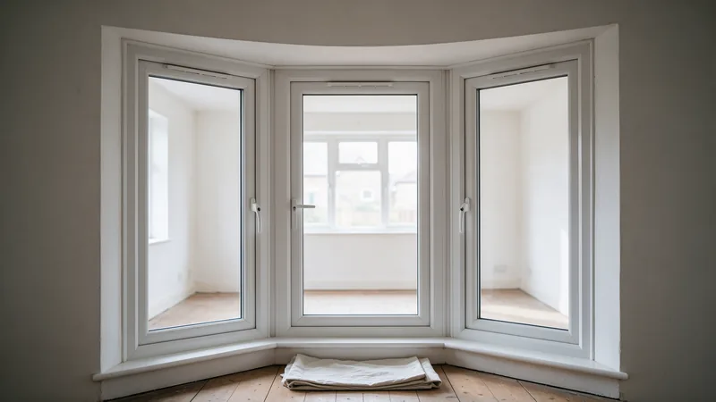
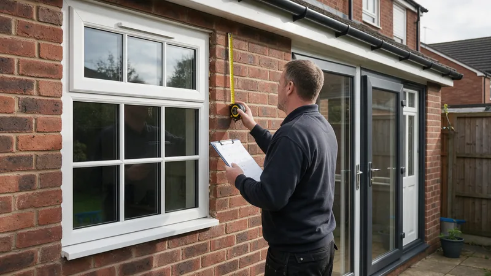
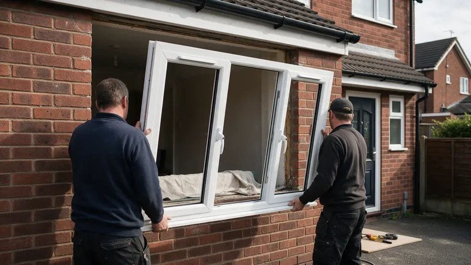

What you are actually buying
Most of the money in a window goes on things you cannot see from the pavement: how square the opening is, how well the frame is packed and fixed, and whether the gap round the outside is filled and sealed properly. A good window fitted carelessly leaks, sticks and drops within a couple of years. A sensible window fitted properly is quiet for twenty.
So the survey matters more than the brochure. Every opening gets measured on its own, because no two in a house are the same, and houses settle. We look at the cill, the lintel over the top, the state of the reveals inside and whether the plaster is going to survive. Then you get told which openings are straightforward and which one is going to be awkward, before anybody takes a deposit.
Matching what is there
On a street of identical houses, a replacement window that gets the sightlines wrong stands out for the next thirty years. The things to match are the way the windows open, where the opener sits, the width of the frame, the glazing bars if there are any, and the colour inside as well as out. You can have grey outside and white inside, and a lot of houses do.
Where we cannot match exactly, you hear it at the survey. Profiles change, manufacturers come and go, and white frames fade. Better to see a sample held up against the old one than to find out when the van arrives.
Repair before replace
Plenty of windows people have been quoted to replace do not need replacing. If the frames are sound and it is the handles, the hinges or one cloudy unit, that is a repair and we will say so, even though it is the smaller job. The time to replace is when the frames themselves have gone, when the mechanisms are past parts, or when you want something the old ones cannot do.

Generated photoGenerated for this demo. Not a photograph of a real job.

Generated photoThe survey is where a window job is won or lost. Generated for this demo.
On the day
How this one usually goes.
- We measure every openingEach one on its own, inside and out, with the cill and the lintel checked. Nothing is ordered off a rough size or a tape held at arm's length.
- You choose the boring things properlyWhich way each window opens, where the handle goes, colour inside and out, the glass in the bathroom, and which windows need a key. These are the decisions people regret, so we take them slowly.
- It gets made to your sizesThen it waits for a fitting date rather than turning up unannounced. You get a date for the van, not a week.
- Fitting day, one opening at a timeDust sheets down, furniture moved back, old frame out whole where we can, new one in, packed, fixed, sealed and tested before the next one comes out.
- We clear up and show you roundOld frames and glass on the van, floor vacuumed, every window opened and closed with you watching, and how to adjust the handles if a door drops a little in its first winter.
A sample running order for this demo. Yours depends on the house.
Questions
Asked about this job.
How long does it take to fit new windows?
An ordinary house is usually one day to two days on site and a single window is a morning. Each opening is only open for well under an hour, because we do them one at a time. The longer wait is between the survey and the fitting while the frames are made to your sizes.
Do you remove the old frames?
Yes, and they go on the van with the old glass and the offcuts. Old windows come out whole wherever possible, which keeps the dust down and the plaster on the wall. The floor is swept and vacuumed before we leave.
Can you match my existing windows?
Usually close enough that nobody would spot the difference from the street. Opening pattern, sightlines, bars, handles and colour can all be matched. Exactly the same is a harder promise once a profile has been out of production for years, and we say so at the survey rather than later.
Will the plaster get damaged?
Sometimes a little, round the reveals, and anybody who promises otherwise on an old house is guessing. Old frames out whole rather than cut out in pieces is what keeps it to a minimum. If you are decorating anyway, tell us and we will leave it ready for you instead.
General trade knowledge written for this demo, not advice on your house.
Our work
Sample jobs like this.

Generated photoNew windows into a 1930s semiStockton Heath SampleGenerated photoBay put back as it wasLymm Sample Generated photoFitting day, front roomGreat Sankey Sample
Generated photoFitting day, front roomGreat Sankey SampleMade up samples with generated pictures. Tap one for the detail.
Also
The other things we do.
Composite and front doors
A solid door, a frame that fits the opening, and a lock that works with one hand full of shopping. Colour, glass and furniture your pick.
More →Bifold and patio doors
Bifolds that stack back and leave the opening clear, sliders that pass behind each other, and french doors where the opening is narrower.
More →Sash window repair and replacement
Cords, weights, beads and draughts put right on the originals, or a new sash window made to the same sightlines when the timber has gone.
More →Misted glass unit replacement
Cloudy glass with the frame still sound is a new sealed unit, not a new window. Usually a short visit and the smaller job by a long way.
More →Window and door repairs
Handles, hinges, locks, gaskets and the mechanism down the edge of a door. The parts wear out long before the frame does.
More →Shall we come and measure?
Tell us what you are looking at and your postcode and we will book a survey. If the glass has gone or a door will not lock, use the urgent line instead.